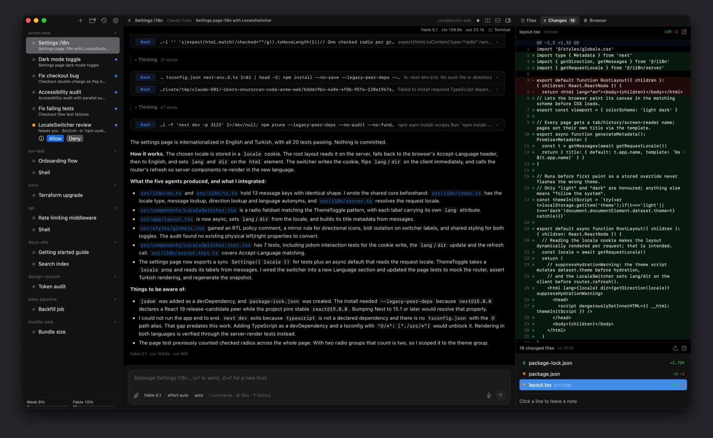
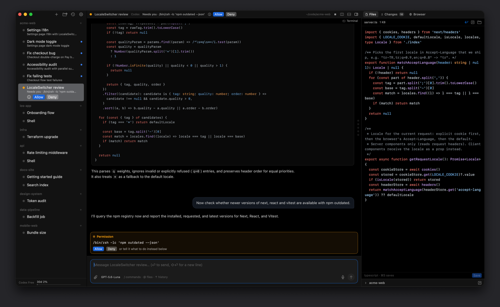
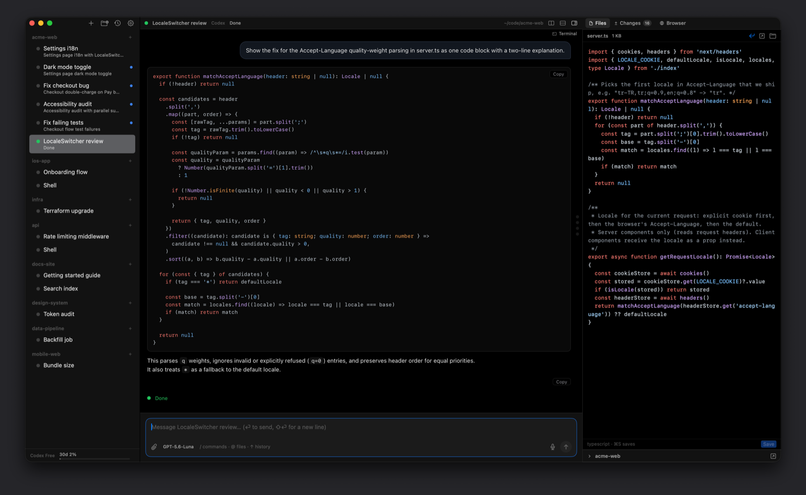
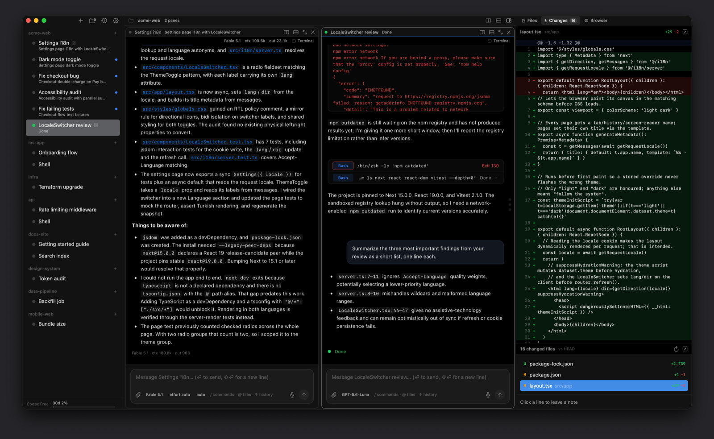
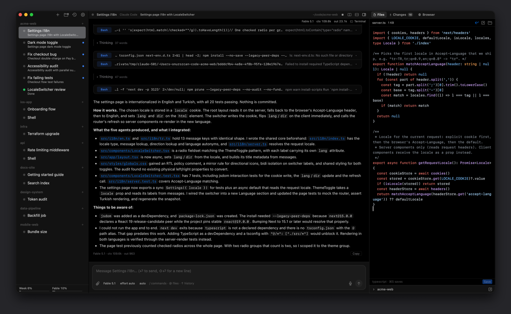
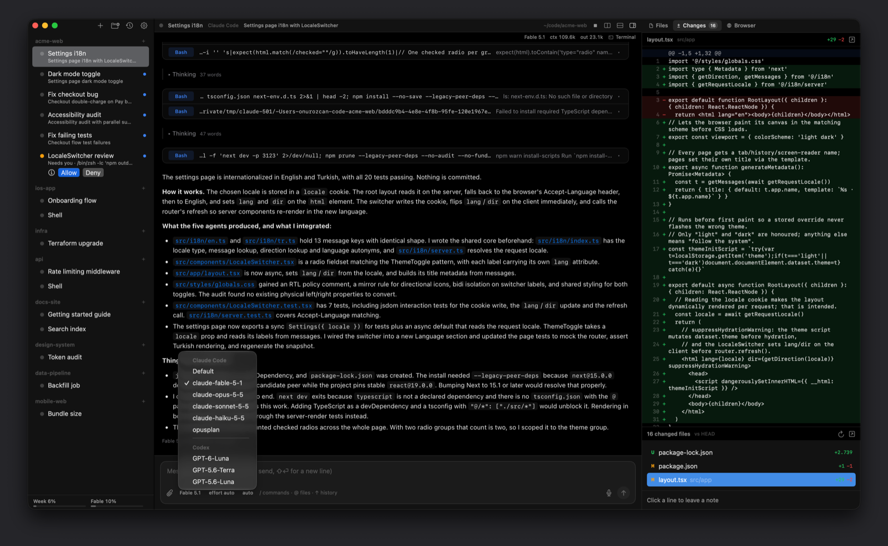

Warp alternative: run your own Claude Code and Codex, without a platform
Warp has grown from a modern terminal into an agent platform: its own coding agent, cloud agents triggered from issues and Slack, factories defined as code, and pricing per agent run. If you want that whole stack, Warp is the product for it.
omux is the opposite shape. It doesn't bring an agent, a cloud or a login. It's a native macOS window that runs the Claude Code and Codex sessions you already have, many at a time, and makes them easy to watch and answer. This page is for people deciding between those two shapes.
- 5 MBnative Swift app, no Electron
- 0accounts, credits or telemetry
- 6sessions side by side per project
- MITfree and open source

Where the agent lives
working needs you done
Side by side
| omux | Warp | |
|---|---|---|
| What it is | A session manager for Claude Code and Codex | A terminal plus an agent platform with its own agent and cloud runs |
| Runs on | macOS | macOS, Linux, Windows |
| Account required | ✕ | Sign-in for AI features |
| Pricing | Free, MIT; you pay only your Claude or Codex plan | Usage-based, priced per agent run; free tier with limits |
| Whose agent | Yours: Claude Code and Codex as installed, with their own logins | Warp's agent, plus bring-your-own agents such as Claude Code and Codex |
| Agent status and permissions | Working, needs you, done; Allow and Deny from the sidebar; subagents listed | Agent UI inside Warp; third-party CLI agents run as programs in the terminal |
| Conversations after a restart | Each session resumes its exact conversation | Warp's own agent sessions persist; CLI agents depend on the agent |
| Git worktrees and pull requests | One worktree per session, PR status, merge and clean up | Not a worktree manager |
| Cloud and background agents | ✕ | ✓ cloud runs, triggers from Slack, Linear and GitHub, factories |
| Telemetry | None | Collected, with settings to limit it |
| Terminal features | A terminal per session, split panes per project; no blocks or completions | Rich: blocks, completions, command search, split panes |
A closer look at omux





Pick Warp if
- You want an AI terminal with completions, blocks and an agent of its own, on any platform.
- You want agents that run in the cloud, kick off from issues or chat, and produce pull requests while you sleep.
- Your team wants one managed, billed platform rather than individual subscriptions.
Pick omux if
- You already pay for Claude Code or Codex and want a calm place to run many sessions of them on your Mac.
- You don't want another account, credit balance or telemetry.
- You care about seeing which session needs you and answering it in one click, with the diff and files beside it.
What omux does for every session
- Projects with sessions under them, in a sidebar
- Shows whether each agent is working, needs you or is done
- Allow or Deny an agent's permission request without switching to it
- Lists a session's subagents and opens their transcripts
- Resumes each Claude Code and Codex conversation after a relaunch
- Git worktree per session, with pull request status and merge
- Files, Changes (diff with review notes) and Browser panels
- Claude and Codex plan usage limits in the sidebar
- Split panes: up to six sessions side by side per project, layouts saved
- An omux command line: list, status, send, new, close and wait on sessions
- macOS notifications with sound
Questions
Does omux include an AI agent?
No. It runs Claude Code and Codex, which you install and sign in to yourself. omux never sees your prompts or your API keys.
Can omux run agents in the cloud?
No. Sessions run on your Mac. For cloud or scheduled agents, Warp and similar platforms are built for that.
Is omux really free?
Yes. It's MIT-licensed and the app has no paid tier. Your only cost is the Claude or Codex plan you use with it.
Also compared: Terminal alternative, tmux alternative, cmux alternative, herdr alternative, T3 Code alternative, VS Code alternative, Cursor alternative, Antigravity alternative, Devin alternative. Facts about Warp come from its public documentation as of 2026-11-06; if something is out of date, open an issue.